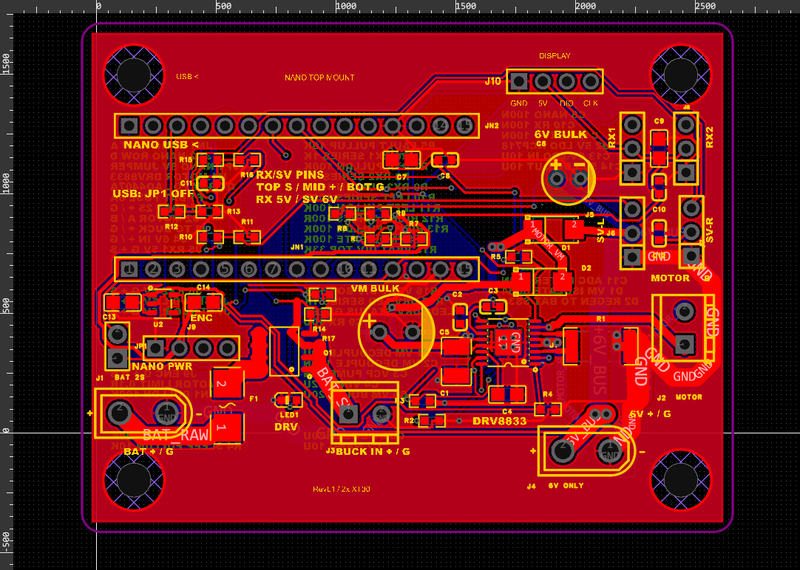

单桨双舵控制板使用入口
先将 ZIP 全部解压，再打开本页。下面的文档、工程和程序均在资料包内，可离线使用。
首次通电前卸下螺旋桨。总开关打开后，CH1 信号稳定约 0.5 秒就会自动缓启动。J4 接调好为 6.0 V 的降压输出，电池经总开关接 J1。
按这个顺序开始
- 准备焊板时，先看四页焊接教程，核对芯片 1 脚、二极管与电解电容极性。
- 焊好后分段检查电源，确认 6 V 主供电与板上 5 V 输出，再插 Nano 和外设。
- Nano 从元件面插入，USB 朝左。接线查看两页 PDF，电机、编码器、屏幕和双舵分别接对应接口。
- 上传
firmware/Boat_Nano_595_Display600/Boat_Nano_595_Display600.ino，选择经典 Nano / ATmega328P，沿用实物适配的引导程序选项。 - 先开遥控器，再开电池总开关。停止时关闭总开关。
当前版本的读数
稳速目标为 595 r/min。普通数字显示最高 600，实际超过 600 时也可能显示 600。控制和保护使用原始反馈，610 r/min 触发 E002。检查真实峰值时查看原始反馈或独立测速记录。
舵机默认脉宽为 600～2400 μs，先拆开连杆核对实际行程。该脉宽范围不能保证每只 SG90 都有 180° 行程。
资料位置
| 内容 | 入口 |
|---|---|
| 完整接线、报码和上电操作 | quick-start-v54.pdf，可按 A4 双面打印 |
| 元件清单、焊接方向和首次上电 | assembly-revl1.pdf |
| 可编辑 PCB 与原理图 | boat-controller-revl1.epro2，导入嘉立创 EDA 专业版 |
| 板上 BOM 与外部模块 | bom.csv、external-parts.csv |
| 正常控制程序 | V5.4 程序 |
| PWM 临时诊断程序 | 转速与 Pxxx 交替显示，此诊断版目标为 600 r/min |
| 旧方案对比 | 两代对照表，原 L298N 程序和文档位于 legacy/l298n-single-servo/ |
| 详细说明 | 接线、固件、机械尺寸、已知问题 |
Markdown 文件可用文本编辑器阅读。原生工程包含原理图、PCB 和工程库资源。Gerber、贴片坐标等制造文件需在核对工程后从 EDA 导出。
XT30 插脚匹配仍需核实。现有板焊封装为 5.0 mm 间距、1.8 mm 钻孔，购买的实物需先对照型号与脚径。完整记录见 docs/known-issues.md。
